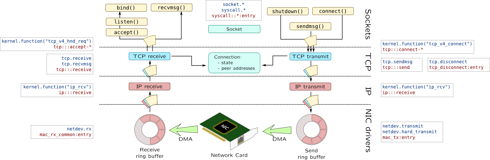

Tools
| DTrace | SystemTap | |
| Tool |
dtrace(1M) |
stap(1) |
| List probes |
# dtrace -l # dtrace -l -P io |
# stap -l 'ioblock.*' # stap -L 'ioblock.*' |
| One-liner |
# dtrace -n '
syscall::read:entry {
trace(arg1); } '
|
# stap -e '
probe syscall.read {
println(fd); } '
|
| Script |
# dtrace -s script.d(optionally add -C for preprocessor, -q for quiet mode) |
# stap script.stp |
| Custom probe |
# dtrace -P io -n start |
- |
| Integer arguments |
# dtrace -n '
syscall::read:entry
/ cpu == $1 / ' 0
|
# stap -e '
probe syscall.read {
if(cpu() != $1) next;
println(fd); } ' 0
|
| String arguments |
# dtrace -n '
syscall::read:entry
/ execname == $1 / ' '"cat"'
|
# stap -e '
probe syscall.read {
if(execname() == @1)
println(fd); } ' cat
|
| Guru/destructive mode ( ! ) |
# dtrace -w ... |
# stap -g ... |
| Redirect to file |
# dtrace -o FILE ...(appends) |
# stap -o FILE ...(rewrites) |
| Tracing process |
# dtrace -n '
syscall::read:entry
/ pid == $target / { ...
}' -c 'cat /etc/motd'
(or -p PID) |
# stap -e '
probe syscall.read {
if(pid() == target()) ...
} ' -c 'cat /etc/motd'
(or -x PID) |
Probe names
| DTrace | SystemTap | |
| Begin/end |
dtrace:::BEGIN, dtrace:::END |
begin, end |
foo() entry |
fbt::foo:entry |
kernel.function("foo") module("mod").function("foo") |
foo() return |
fbt::foo:return |
kernel.function("foo").return |
| Wildcards |
fbt::foo*:entry |
kernel.function("foo*") |
Static probe mark |
sdt:::mark |
kernel.trace("mark") |
| System call |
syscall::read:entry |
syscall.read |
| Timer once per second |
tick-1s |
timer.s(1) |
| Profiling |
profile-997hz |
timer.profile(), perf.* |
read() from libc |
pid$target:libc:read:entry Traces process with pid == $target |
process("/lib64/libc.so.6").function("read") Traces any process that loads libc |
In DTrace parts of probe name may be omitted: fbt::foo:entry -> foo:entry
Units for timer probes: ns, us, ms, s, hz, jiffies (SystemTap), m, h, d (all three - DTrace)
Printing
| DTrace | SystemTap | |
| Value |
trace(v) |
print(v) |
| Value + newline | - |
println(v) |
| Delimited values | - |
printd(",",v1,v2) printdln(",",v1,v2) |
| Memory dump |
tracemem(
ptr, 16)
|
printf("%16M", ptr) |
| Formatted |
printf("%s", str) |
|
| Backtrace |
ustack(n) ustack() |
print_ubacktrace()
print_ustack(
ubacktrace())
|
| Symbol |
usym(addr) ufunc(addr) uaddr(addr) |
print(usymname(addr)) print(usymdata(addr)) |
If u prefix is specified, userspace symbols and backtraces are printed, if not –- kernel symbols are used
String operations
| Operation | DTrace | SystemTap_ |
| Get from kernel |
stringof(expr) (string) expr |
kernel_string*() |
| Convert scalar |
sprint() and sprintf() |
|
| Copy from user |
copyinstr() |
user_string*() |
| Compare |
==, !=, >, >=, <, <= |
|
| Concat |
strjoin(str1, str2) |
str1 . str2 |
| Get length |
strlen(str) |
|
| Check for substring |
strstr(
haystack,
needle)
|
isinstr(
haystack,
needle)
|
Context variables
| Description | DTrace | SystemTap |
| Thread |
curthread |
task_current() |
| Thread ID |
tid |
tid() |
| PID |
pid |
pid() |
| Parent PID |
ppid |
ppid() |
| User/group ID |
uid/gid |
uid()/gid() euid()/egid() |
|
Executable name |
execname curpsinfo-> ps_fname |
execname() |
| Command line |
curpsinfo-> ps_psargs |
cmdline_*() |
| CPU number |
cpu |
cpu() |
| Probe names |
probeprov probemod probefunc probename |
pp() pn() ppfunc() probefunc() probemod() |
Time
| Time source | DTrace | SystemTap |
| System timer |
`lbolt `lbolt64 |
jiffies() |
| CPU cycles | - |
get_cycles() |
| Monotonic time |
timestamp |
local_clock_unit()
cpu_clock_unit(cpu) |
| CPU time of thread |
vtimestamp |
- |
| Real time |
walltimestamp |
gettimeofday_unit() |
Where unit is one of s, ms, us, ns
Aggregations
| Time source | DTrace | SystemTap |
| Add value |
@aggr[keys] = func(value); |
aggr[keys] <<< value; |
| Printing |
printa(@aggr);
printa("format string", @aggr);
|
foreach([keys] in aggr) {
print(keys, @func(aggr[keys]));
}
|
| Clear |
clear(@aggr); or trunc(@aggr); |
delete aggr; |
| Normalization by 1000 |
normalize(@aggr, 1000); denormalize(@aggr); |
@func(aggr) / 1000 in printing |
| Select 20 values |
trunc(@aggr, 20); |
foreach([keys] in aggr limit 20) {
print(keys, @func(aggr[keys]));
}
|
| Histograms (linear in [10;100] with step 5 and logarithmical) |
@lin = lquantize(value, 10, 100, 5); @log = quantize(value); ... printa(@lin); printa(@log); |
aggr <<< value; ... print(@hist_linear(aggr, 10, 100, 5)); print(@hist_log(aggr)); |
Where func is one of count, sum, min, max, avg, stddev
Process management
SystemTap
Getting task_struct pointers:
-
task_current()– current task_struct -
task_parent(t)– parent of taskt -
pid2task(pid)– task_struct by pid
Working with task_struct pointers:
-
task_pid(t)&task_tid(t) -
task_state(t)– 0 (running), 1-2 (blocked) -
task_execname(t)
DTrace
kthread_t* curthread fields:
- t_tid, t_pri, t_start, t_pctcpu
psinfo_t* curpsinfo fields:
-
pr_pid,pr_uid, pr_gid, pr_fname, pr_psargs, pr_start
lwpsinfo_t* curlwpsinfo fields:
-
pr_lwpid,pr_state/pr_sname
psinfo_t* and lwpsinfo_t* are passed to some proc::: probes

Scheduler

| DTrace | SystemTap | |
| 1 |
sched:::dequeue |
kernel.function("dequeue_task") |
| 2 |
sched:::on-cpu |
scheduler.cpu_on |
| 3 |
sched:::off-cpu |
scheduler.cpu_off |
| 4 |
sched:::enqueue |
kernel.function("enqueue_task") |
| 5 | - |
scheduler.migrate |
| 6 |
sched:::sleep |
- |
| 7 |
sched:::wakeup |
scheduler.wakeup |
Virtual memory
Probes
SystemTap
-
vm.brk– allocating heap -
vm.mmap– allocating anon memory -
vm.munmap– freeing anon memory
DTrace
-
as_map:entry– allocating proc mem -
as_unmap:entry– freeing proc mem
Page faults
| Type | DTrace | SystemTap |
| Any |
vminfo::as_fault |
vm.pagefault vm.pagefault.return perf.sw.page_faults |
| Minor |
perf.sw.page_faults_min |
|
| Major |
vminfo:::maj_fault |
perf.sw.page_faults_maj |
| CoW |
vminfo:::cow_fault |
|
| Protection |
vminfo:::prot_fault |
Block Input-Output
Block request structure fields:
| Field |
bufinfo_t struct buf |
struct bio |
| Flags |
b_flags |
bi_flags |
| R/W |
b_flags |
bi_rw |
| Size |
b_bcount |
bi_size |
| Block |
b_blkno b_lblkno |
bi_sector |
| Callback |
b_iodone |
bi_end_io |
| Device |
b_edev b_dip |
bi_bdev |
* flags B_WRITE, B_READ

Network stack

Non-native languages
| Function call | DTrace | SystemTap |
| Java* |
method-entry
|
hotspot.method_entry
|
| Perl |
perl$target:::sub-entry
|
process("...").mark("sub__entry")
|
| Python |
python$target:::function-entry
|
python.function.entry
|
| PHP |
function-entry
|
process("...").mark("function__entry")
|
*requires -XX:+DTraceMethodProbes